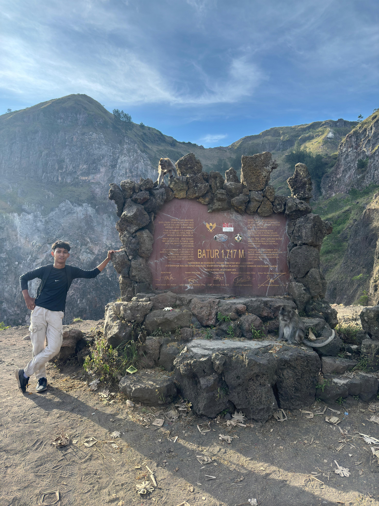
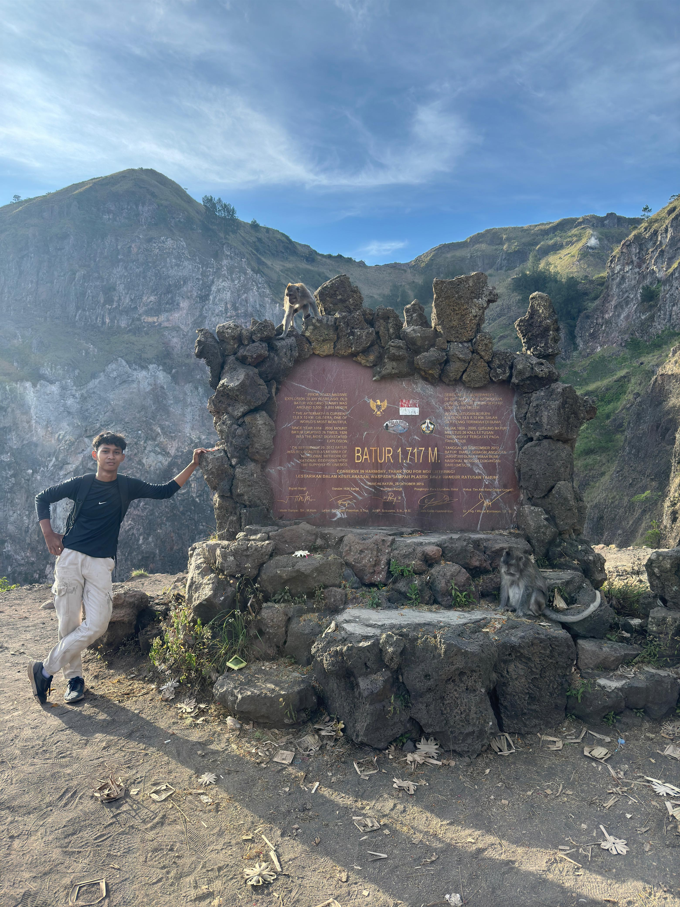

MOUNT BATUR
 


Tentang Gunung Batur
Gunung Batur adalah gunung berapi aktif yang terletak di daerah Kintamani, Bali, Indonesia. Dengan ketinggian sekitar 1.717 meter di atas permukaan laut, gunung ini merupakan salah satu tujuan trekking paling populer di Bali. Puncaknya menawarkan pemandangan yang menakjubkan, terutama saat matahari terbit, menjadikannya tempat yang wajib dikunjungi bagi pecinta alam dan pencari petualangan.
Selain pemandangannya yang memukau, Gunung Batur dikelilingi oleh Danau Batur yang tenang, yang terbentuk oleh kaldera gunung berapi. Daerah ini juga dikenal dengan pemandian air panas alami, yang sempurna untuk bersantai setelah mendaki.
Pendakian ke puncak biasanya memakan waktu sekitar 2-3 jam, dan setibanya di atas, Anda akan disuguhi pemandangan panorama pegunungan di sekitarnya dan danau yang tenang di bawah. Baik Anda seorang pendaki berpengalaman atau hanya mencari petualangan yang indah, Gunung Batur menjanjikan pengalaman yang tak terlupakan.